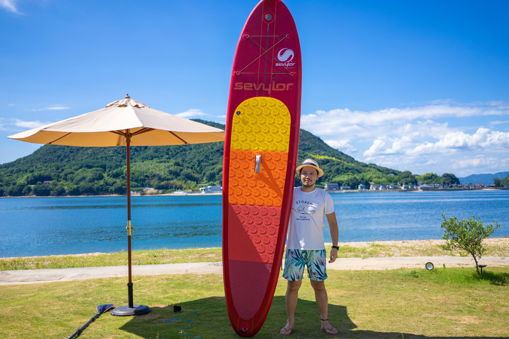

Photo
CIELA 外観・ビーチ
Villa · Glamping
CIELA
シエラ — 最大8名
目の前が砂浜と海。BBQ・焚き火・星空、ビーチサイドのプライベート貸切グランピング。Beachfront private glamping — BBQ, bonfire, and a sky full of stars.
OPEN 2016
From Tokyo's advertising frontlines to a small island in the Seto Inland Sea — building places, brands and local economies that keep growing.
東京の広告最前線から、瀬戸内の小さな島へ。場所と、ブランドと、地域経済を育てる。
広告の最前線で磨いた25年の勝ち筋を、海辺の空き家1軒に注ぎ込む。机上の戦略ではなく、現場で結果に変えてきました。 25 years of winning strategy from advertising's frontline, poured into a single empty house by the sea — proven on the ground, not on paper.

東京の広告・IT業界で25年。サイバーエージェントなどで100社を超えるデジタルマーケティングを手がけたのち、広島・尾道の離島「百島」へ移住。1軒の空き家のリノベーションから始め、宿・ビーチアクティビティ・飲食までを束ねる「瀬戸内隠れ家リゾート」を育ててきました。 25 years in Tokyo's advertising and IT industries. After leading digital marketing for over 100 companies at CyberAgent and others, I moved to Momoshima — a small island off Onomichi, Hiroshima. Starting from the renovation of a single empty house, I've grown "Setouchi Hideaway Resort": villas, beach activities, and dining, all under one roof.
つくっているのは、建物ではありません。人が訪れ、また来たくなる「選ばれる理由」です。デジタルで磨いた勝ち筋を、リアルな場所づくりに持ち込んでいます。 What I build isn't buildings. It's the reason a place gets chosen — the reason people come, and come back. I bring the winning patterns honed in digital into the making of real places.
「遊休不動産を活用して、瀬戸内をリノベーションで革新的な空間に。世界的に魅力のあるエリアへ。」 "Reusing idle real estate to renovate Setouchi into innovative spaces — and a destination the world admires."
2016年、尾道港から客船で25分の離島・百島。目の前に砂浜と海が広がる1軒の空き家を、自らDIYでリノベーションし、一棟貸しの宿「CIELA（シエラ）」をオープンしました。 In 2016, on Momoshima — an island 25 minutes by boat from Onomichi port — I renovated a single empty house facing the beach with my own hands, and opened "CIELA", a whole-house private rental villa.
東京で培ったデジタルマーケティングの"勝ちパターン"を持ち込んだ結果、著名人の間でも「予約が取れない宿」として話題に。以降、毎年120%で成長を続けています。 By bringing in the winning patterns of digital marketing I'd built in Tokyo, it became known — even among celebrities — as "the villa you can't book." Since then it has grown 120% every year.
A vacant house became a destination. The model — natural setting first, then a comfortable place for people — now scales across the island.
Setouchi Hideaway Resort · Momoshima, Onomichi
目の前が砂浜と海。BBQ・焚き火・星空、ビーチサイドのプライベート貸切グランピング。Beachfront private glamping — BBQ, bonfire, and a sky full of stars.
2棟目の貸別荘。CIELAと2棟貸切で、グループや三世代の滞在にも。The second villa — book both with CIELA for groups and multi-generation stays.
3棟目。ペット同伴可・大人数対応。合宿やワーケーションにも。The third villa — pet friendly, up to 18 guests, great for retreats.
トリマランカヤック、SUP、テントサウナ。瀬戸内海をフィールドにしたオリジナル体験。Trimaran kayak, SUP and tent sauna — original experiences on the Seto Inland Sea.
瀬戸内の食を楽しむガストロラウンジ。滞在に"食の体験"を重ねる。A gastro lounge celebrating Setouchi's cuisine — layering food onto the stay.
1日1組限定の貸切オートキャンプ場。ペットと一緒に砂浜で過ごす。A private auto-camp, one group a day — beach time with your dog.
LP最適化、広告クリエイティブ、SEO、メディア運営。サイバーエージェントでモバイル広告とLPを大量に最適化し、せとうちDMOでは観光メディア「瀬戸内Finder」を瀬戸内No.1へ。LP optimization, ad creative, SEO, media operations. At CyberAgent I optimized mobile ads and landing pages at scale; at Setouchi DMO I grew the travel media "Setouchi Finder" into the region's No.1.
VIリニューアル、企業サイト、プロモーション設計。万田発酵ではVI／ブランドリニューアルを主導。NTTドコモのIRサイトはGomez総合ランキングで1位を獲得しました。Visual identity renewals, corporate sites, promotion design. I led the VI and brand renewal at Manda Hakko; the NTT DoCoMo IR site I produced ranked No.1 on the Gomez overall ranking.
遊休不動産の再生、観光商品の開発、体験設計。空き家を収益事業に変え、地域に雇用と関係人口を生み出す、現場からの事業づくり。Reviving idle real estate, developing tourism products, designing experiences. Turning empty houses into revenue, creating local jobs and connected populations — business built on the ground.
講演・コンサルティング・共同事業のご相談を承っています。 Available for talks, consulting, and joint ventures.
地方創生、移住起業、デジタルマーケティングの実践知を、現場の言葉で。Regional revitalization, moving & founding, and hands-on digital marketing.
観光・宿泊・地域事業の立ち上げとグロース。集客から商品設計まで。Launch & growth for tourism, lodging and local business — from acquisition to product.
遊休不動産の活用、エリア開発。出資・連携のご相談も。Idle-property use and area development — investment & collaboration welcome.